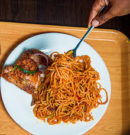

SPAGHETTI

Spaghetti also known as pasta is one of the top ten mountains im willing to die on. most especially Jollof Spaghetti.
My favorite fact about Pasta is that it is a punishable offence in Italy to break pasta while here in my side of the world, they break it mostly because they believe it would make it plenty for all. For me*whispering* I prefer not breaking it, It is more enjoyable that way.
I am diverting. Back to recipes of Spaghetti, let's talk about Jollof Spaghetti. It is easy to make, hard for some and students go to meal.
INGREDIENTS
- Red bell peppers
- tomatoes
- onions
- Pasta
- Vegetable Oil
- Seasoning cube
- Salt
- Tomato Paste
- Protein of your choice, Chicken, Meat, Fish or Plantain
RECIPE INSTRUCTIONS
- Boil the pasta and drain it
- Place a large pan on medium heat, add the cooking vegetable oil and leave to heat. add in the sliced onions and stir fry until fragrant
- Add in Tomato paste and leave to simmer for 3 minutes. Add in maggi and salt. Taste and adjust for seasonings and leave to boil.
- Add warm pasta into the sauce and stir to incorporate sause and pasta
- Cover and leave to simmer for 5 more minutes
- Serve with protein and chilled drink of your choice.